动画 · 01
CEE Mouse 动画设计《三个零》
一支 64 秒的三维产品演示动画。产品是一款无线鼠标， 我们要回答的问题是：怎么让观众在一分钟里既看清它的内部结构，又记住它的三个卖点。
- 年份
- 2023
- 类型
- 课程设计 · 三人小组
- 我的分工
- 脚本 / 建模 / 动画 / 后期
- 软件
- 3ds Max 2022
- 成片
- 1920×1080 · 30fps · 64s
完整成片 · 64 秒（1080p）
创意与结构Concept
产品演示动画最容易犯的错，是把它做成一段“转体展示”——模型绕着 Y 轴转一圈， 好看但什么也没说。我们决定反过来做：先说主张，再用结构证明它。
于是全片被拆成三段，每段由一张字幕卡领起，随后用一组镜头解释它凭什么成立：
- 零延迟 ZERO LATENCY — 切到内部电路板与光学传感器，用红色光线示意光路与信号回传
- 零阻力 ZERO RESISTANCE — 滚轮轴承与滚花特写，落在手感与顺滑度
- 零分贝 ZERO DECIBEL — 壳体与按键结构剖面，说明静音的来源
三段之间用“全环保材料”“全新技术打造羽量级无感鼠标”一类短字幕做呼吸点，
拆解镜头里还标了 -4.3G、-0.3G 的减重数据，
避免信息密度一路拉满。
镜头脚本与节奏表Shot List
本片为三维渲染作品，前期以文字脚本定下镜头顺序与时长分配（我与刘平负责脚本）， 再由摄像机动画逐段实现。下表按成片时间轴整理，对应脚本里的每个镜头单元及其叙事作用。
← 表格可左右滑动查看完整内容 →
| 段落 | 时间码 | 画面 | 叙事作用 |
|---|---|---|---|
| 开场 | 00:00 | 暗场中鼠标侧影，灯光缓慢扫过轮廓 | 建立质感与情绪 |
| 外观 | 00:08 | 白底环境，侧视到俯视的外观巡览 | 交代产品全貌 |
| 材质 | 00:16 | “全环保材料”字幕 + 零件横向排开 | 第一个主张落地 |
| 拆解 | 00:20 | 上下壳、滚轮、内部零件依次炸开分离，同步标注 -4.3G / -0.3G 减重数据 | 用结构支撑轻量化 |
| 透视 | 00:28 | 推入内部，电路板与元件特写 | 从外观转向内在 |
| 原理 | 00:36 | 光学传感器光路示意（红色激光线进出） | 解释“零延迟” |
| 部件 | 00:41 | “优质轴承”字幕 + 滚轮轴承与电路板特写 | 解释“零阻力” |
| 字幕卡 | 00:48 | “零延迟 / 零阻力 / 零分贝”三张字幕卡依次压在壳体上 | 三个卖点收束 |
| 配色 | 00:56 | 白色版与深灰版成品渲染并置 | 展示可选方案 |
| 片尾 | 01:02 | 片尾字幕：建模 / 材质 / 脚本 / 动画 / 后期分工与指导老师 | 收尾署名 |
时间码依据成片时间轴校对；全片共 64 秒，1920×1080、30fps。
制作过程Process
参考与拆解
先收集实物鼠标的三视图与拆机图，把它拆成上层壳、内层壳、底板、滚轮、 按键、电路板、传感器七个部件，明确每个部件在动画里要不要单独出镜—— 这决定了建模精度该花在哪。
样条线起形
鼠标外壳是典型的自由曲面，直接用几何体拼不出来。 做法是先用样条线（Line / Circle）在三个视图里勾出截面轮廓， 再放样与挤出成基础曲面，保证左右对称与握感弧度。
结构细化
用挤出、倒角、布尔运算开出按键缝隙、散热孔、滚轮槽与接口位， 再叠加平滑细分让曲面达到产品级精度。 滚轮的滚花通过阵列细密的凸起做出，特写镜头下才立得住。
这一步最费时间：布尔之后要手动清理破面与多余顶点， 否则渲染时会出现难看的黑边。
材质与布光
外壳用磨砂塑料，按键与滚轮金属圈用高光金属， 电路板贴图配合自发光元件。灯光以三点布光为底， 再加一盏扫光负责开场镜头里那条沿轮廓滑过的高光带。
摄像机动画
全片不靠模型自转，而是让摄像机移动：环绕、推近、拉出与俯视切换。 零件炸开用位移关键帧配合缓入缓出曲线， 让分离动作有“被拆开”的重量感而不是生硬平移。
渲染与后期
分段渲染输出序列，再在剪辑软件里拼接、调色、添加字幕卡与转场， 配上节奏匹配的背景音乐，最后压制为 1080p 成片。
建模与画面Gallery
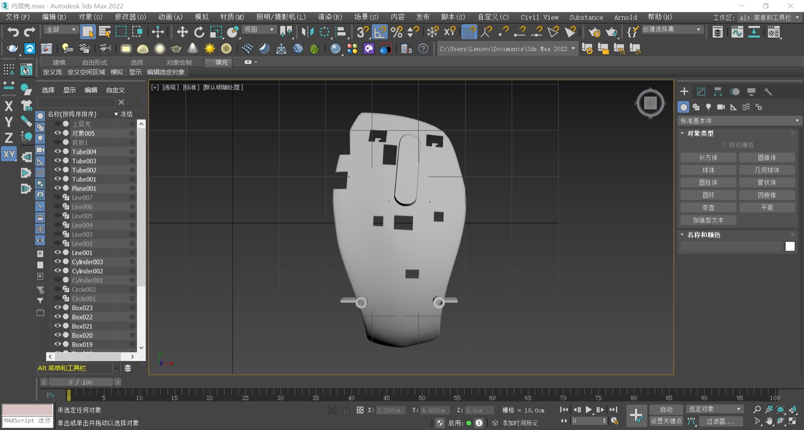
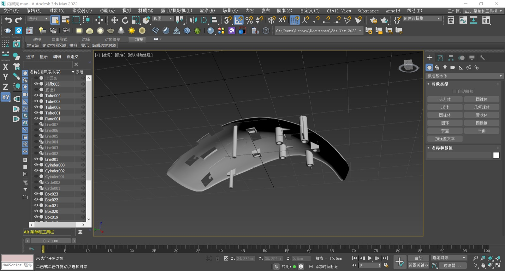
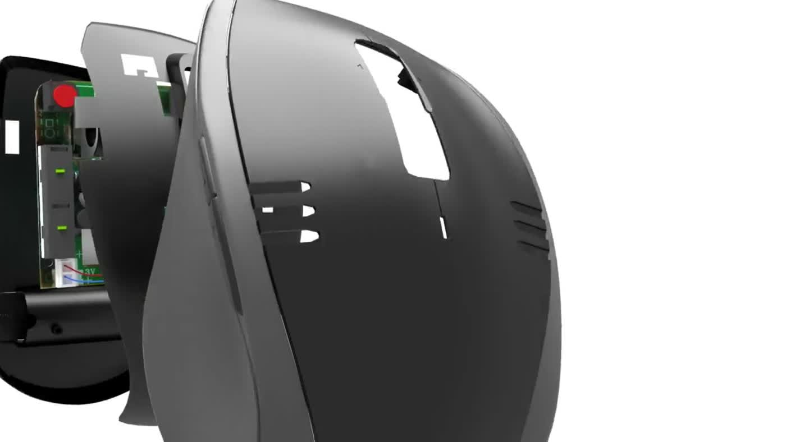
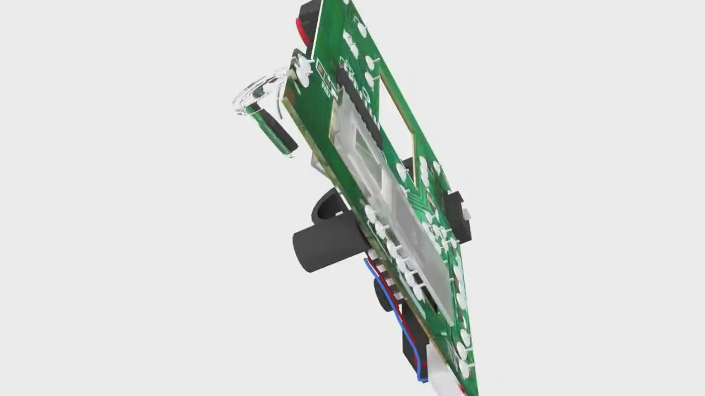
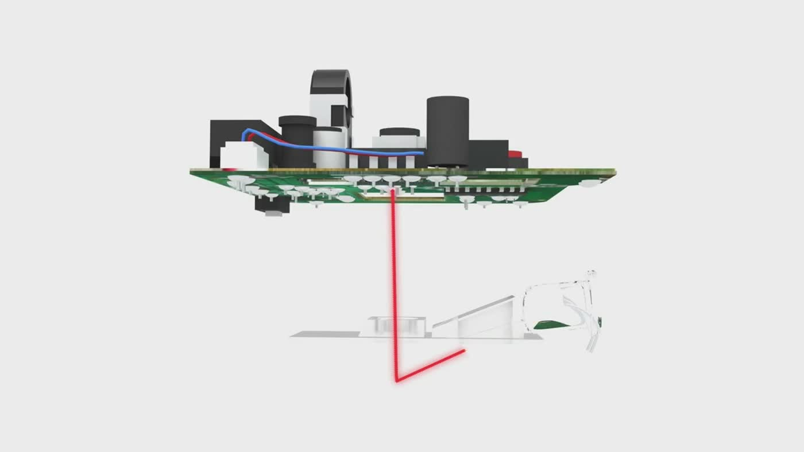
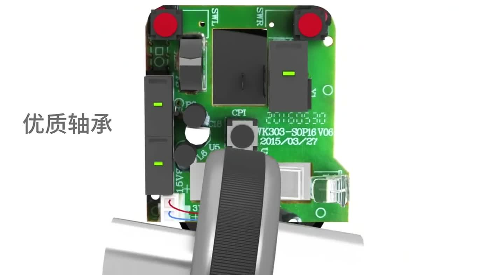
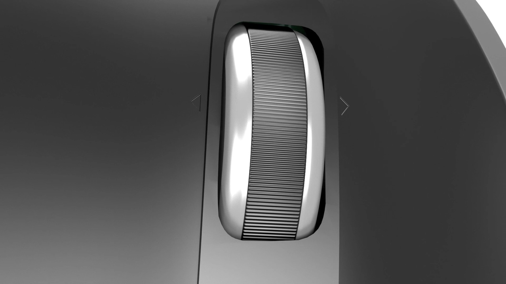
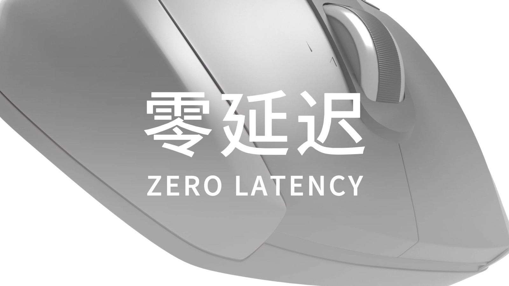
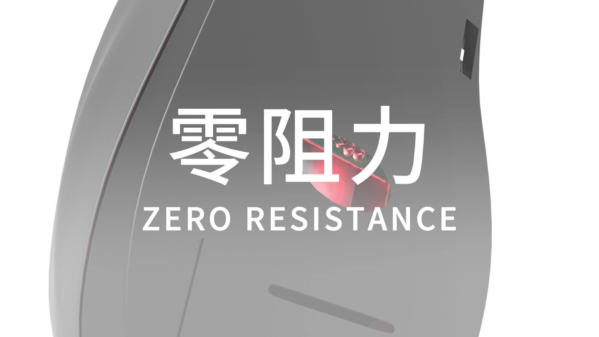
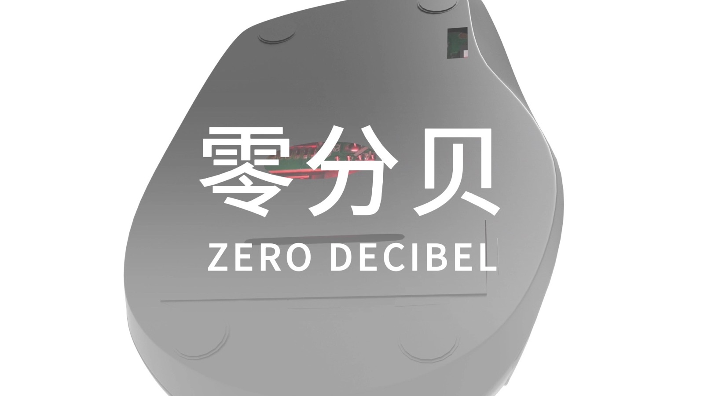
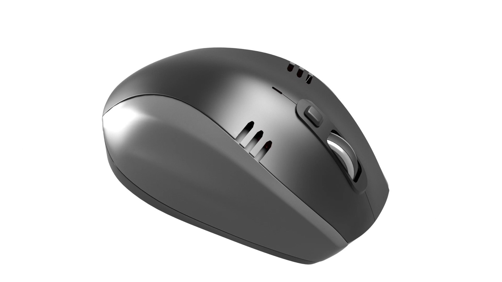